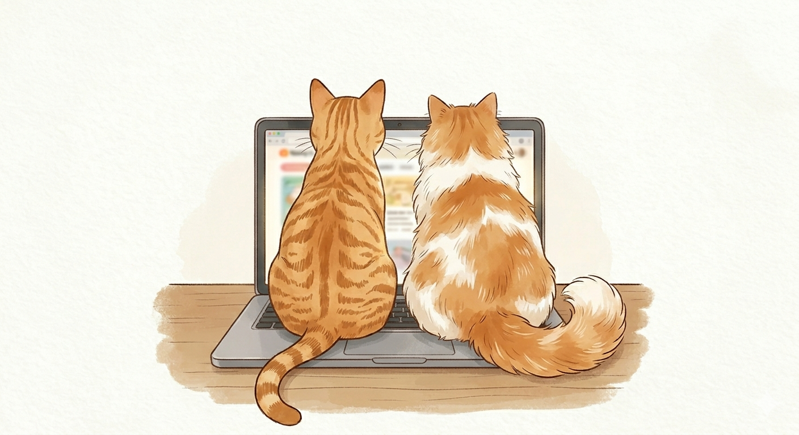
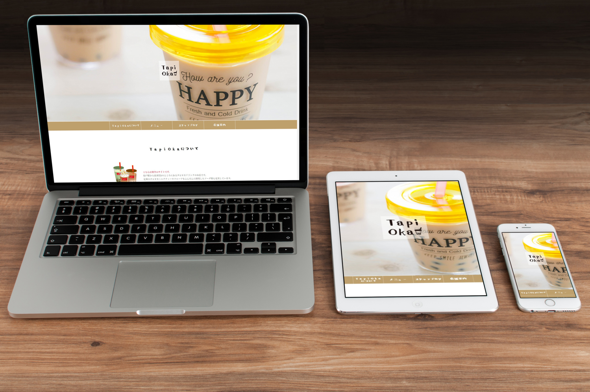
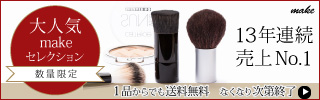

コーディング
デザインからのコーディングが可能です。CSSはネストも可。jQuery・JavaScriptは簡素な実装・修正が可。PHPはWordpressのコーディング程度が可。コーディングはSourcetreeを使用したgit管理の経験があります。
PORTFOLIO

ABOUT ME
Web制作の世界に身を置いて8年。 更新・運用とコーディングを主軸に、数多くのプロジェクトに携わってきました。作って終わりではなく、後任者へも分かりやすいコード実装や文章チェックなど、丁寧な仕事を心掛けています。 最近はプライベートでAIを勉強中。
デザインからのコーディングが可能です。CSSはネストも可。jQuery・JavaScriptは簡素な実装・修正が可。PHPはWordpressのコーディング程度が可。コーディングはSourcetreeを使用したgit管理の経験があります。
Wordpressは記事作成・更新・テンプレート修正などの実務経験があります。はてなCMSは新規テンプレート作成・テンプレートデザインの改修などの実務経験があります。
バナーやサムネイルなど、簡単な画像作成や修正が可能です。
制作現場でよく使用されるスケジュール管理ツール、オフィスツール、コミュニケーションツールは、業務に支障ない程度で一通り使用できます。

実在のお店をモデルに、クライアントから依頼を受けた程で制作をしました。要件定義～フレームワーク～カンプ～コーディングまでと、一連の工程を想定して制作しています。 主要な項目はトップページ内ですべて把握できるようにし、メニューは別ページにし「値段」「サイズ」が一覧で見やすいようにしました。タピオカドリンクのポップさを出すために、タイトルやロゴにはフリーフォントを使用。ロゴにはタピオカドリンクのストローがくるくると可愛く回るようにgif画像を使用しました。


作業時間 約3時間（素材探し～完成まで）。フォントに游明朝を使用し女性らしさの表現。ワンポイントに高級感を感じる赤色とゴールドの色味を付けました。


作業時間 約4時間（素材探し～完成まで）。豊富なキャラクターがいるゲームだと知ってもらう為、いくつかのキャラクターを配置。特別なキャンペーンの訴求性を高める為に「100連ガチャ」のフォントを大きく目立たせ、グラデーションを掛けたレインボーで目立つようにしました。目玉の「100連ガチャ」の文字には特別感を出す為にキラキラした装飾を使用。